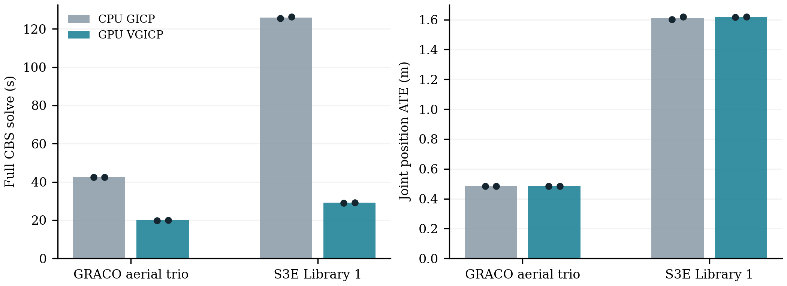

Two matched three-robot graphs, two repeats per configuration. Eight completed solves; all robots connected. Unchanged 100-iteration schedule.

| Group | Mode | Solve repeats (s) | Joint ATE repeats (m) |
|---|---|---|---|
| GRACO A05/A07/A08 | gicp | 42.40, 42.44 | 0.4846, 0.4852 |
| GRACO A05/A07/A08 | vgicp_gpu | 19.81, 20.02 | 0.4843, 0.4851 |
| S3E Library 1 | gicp | 125.58, 126.33 | 1.6023, 1.6188 |
| S3E Library 1 | vgicp_gpu | 29.08, 29.10 | 1.6173, 1.6194 |
Dots show individual repeats. Bars show medians. Full solves still take 20–29 seconds; this is not ten-second publication latency. Library 1 has sparse ground truth. No Jetson deployment or all-14 GPU claim.